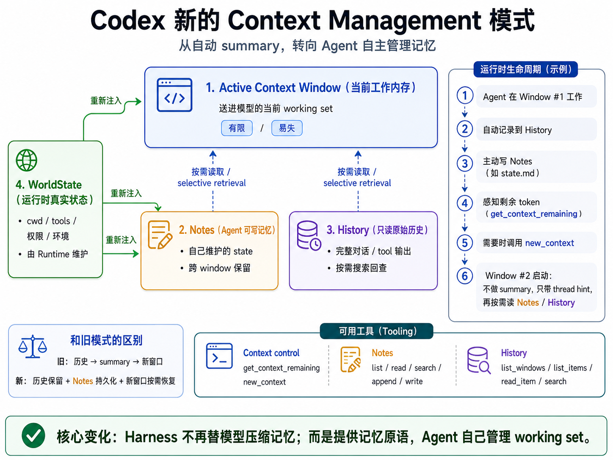
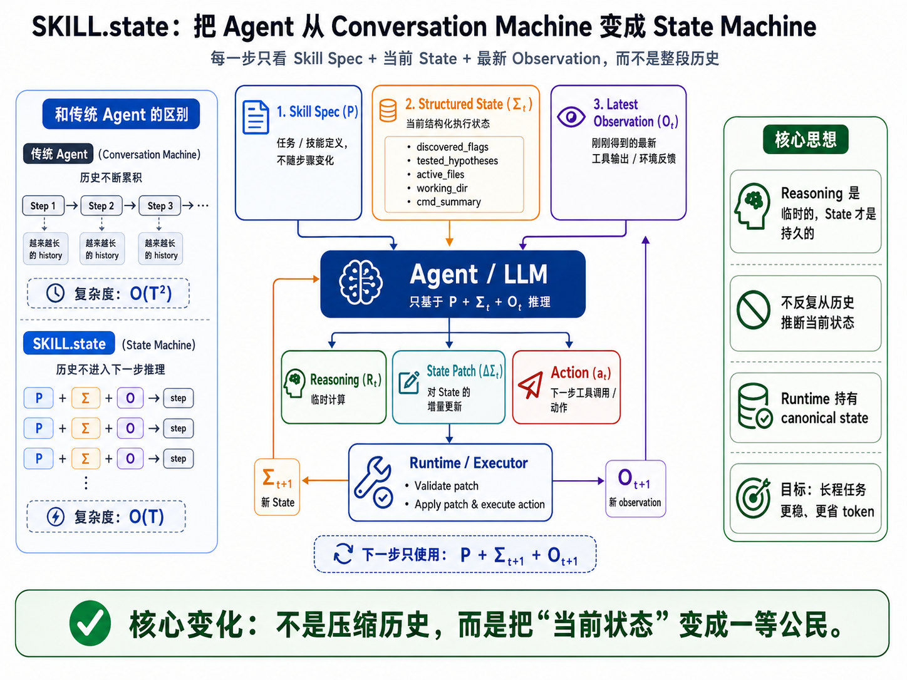

Codex 正在实验一套新的上下文管理方式：Context Window 仍然有限，但模型开始知道自己还剩多少空间、主动维护 Notes、按需回查 History，并能自己决定什么时候开启下一个 Window。它改变的不是摘要算法，而是 Agent 与 Context 的分工。

Active Context 只保留当前 working set；Notes、History 与 WorldState 跨 Window 留存，并在新 Window 中重新注入或按需读取。
传统 coding agent 的 Context 管理通常只有一条主线：conversation 越积越长，达到阈值之后，让模型总结之前的历史，再拿这段 summary 作为下一段上下文的桥。Codex 旧的 compaction 机制就是这个思路。
过去：
完整 conversation
↓
达到 context 阈值
↓
LLM 总结历史
↓
summary + 少量保留内容
↓
继续采样新的 experimental context-management 路线把“记忆”拆成四种完全不同的东西：
图例：暗赭红 = Active Context / 主流程；紫红 = Agent 自己维护的 Notes；蓝灰 = 只读 History；绿色 = Harness 维护的 WorldState。
模型当前真正能直接注意到的工作集。最近的消息、工具结果、必要的状态提示都在这里。它仍然有硬 token 上限，因此“新模式”并不是无限上下文。
模型自己读写的持久工作记忆。它不等同于“一份 compaction summary”，更像一个跨 Window 存活的虚拟文件区：可以有 state.md、todo.md、experiments.md 等多个文件。
Runtime 自动保存的原始历史，模型只能 list / search / read，不能修改。Notes 写漏、写错或者需要恢复具体证据时，可以回到 History 查原始记录。
当前 cwd、环境、权限、模型、工具、multi-agent 配置等真实运行状态继续由 Harness 维护。这里的边界很重要：模型可以负责记忆，但不能负责定义现实。
因此，新方案真正改变的是 Context 的角色：它不再被当成“全部记忆的唯一容器”，而更像一个可随时重建的 working set。
修复 cache invalidation bug，跑完测试，并且不能修改 public API。跟着这条约束，看 Agent 怎样跨越两个窗口继续工作。
Notes 不应该理解成“一次 compaction 对应一个 summary 文件”。从公开 API 看，它更像整个 rollout 共享的一组虚拟文本文件：
| Tool | 作用 | 关键点 |
|---|---|---|
notes.list_files_by_prefix | 按路径前缀浏览 Notes 文件 | 可按名称、创建时间或更新时间排序 |
notes.read_file | 读取一个 Note | 支持按行范围读；负数行号可从文件尾部倒数 |
notes.search_contents | 在 Notes 中做文本搜索 | 当前是大小写敏感的 literal substring，返回匹配行 |
notes.append_to_file | 原样追加文本 | 适合实验日志、决策流水 |
notes.write_file | 创建或完整覆盖文件 | 适合反复维护 state.md / todo.md |
所以 Notes 并不是只能增加。write_file 的语义是“完整 replacement”，典型做法应该是不断覆盖同一个状态文件：
state.md V1
↓ write_file 覆盖
state.md V2
↓ write_file 覆盖
state.md V3Notes 的路径是虚拟路径，不对应工作区真实文件；相对路径定位到当前 Agent 的 <agent_name>/notes/...，绝对路径可定位其他 Agent。工具说明允许跨 Agent 读写；本文采用的 Astra guidance 则进一步要求只写当前线程、可以读取其他线程。这是工具能力与模型使用规则的区别。单个文件上限为 1,000,000 UTF-8 字节。
| Tool | 作用 | 关键点 |
|---|---|---|
history.list_windows | 列出某个 Agent 的 Context Windows | 返回 window identity 与 item 数量，用于先定位时间段 |
history.list_items | 浏览 History items | 支持 window / role / tool namespace / tool name 等过滤 |
history.read_item | 读取一条原始 History item | 可用字符 offset + limit 做局部读取 |
history.search_contents | 在原始历史里搜索字符串 | 支持跨 Window 搜索，也可按 role / tool 过滤 |
一个 item 是一条归一化历史记录，可以承载 user、assistant、tool、system 或 developer 内容。当前窗口的记录也会持续进入 History，不必等到换窗；新条目可能延迟几秒才能查到。list_items 还提供 max_chars_per_item，说明浏览阶段可以只拿 preview；确定目标之后再 read_item 精确读取。
两者的核心区别：
| Notes | History | |
|---|---|---|
| 谁生成 | Agent 主动写 | Runtime 自动记录 |
| 能否修改 | 可以 | 不可以 |
| 保存什么 | Agent 认为值得保留的任务状态 | 真正发生过的原始 conversation / tool evidence |
| 主要用途 | 快速恢复工作状态 | Notes 不够、写错或需要细节时查证 |
Notes 保存整理后的工作状态；History 保留原始消息和工具记录。历史中的模型判断仍可能出错，需要结合工具结果核对。
例如 Notes 只记了一句“方案 A 失败”，新的 Window 突然需要知道当时到底为什么失败，就可以用 History 找回原始测试结果，而不是依赖那句已经压缩过的结论。
如果 Notes 的正文每次 rollover 后都自动全部进入下一 Window，那么所谓 persistent memory 很快又会重新变成 active context：
Window #1 产生 5k Notes
↓ 全量注入
Window #2 又产生 8k Notes
↓ 全量注入
Window #3 开局已经背着越来越大的 memory payload
↓
最终重新遇到同一个 context 膨胀问题Codex 当前采用的是一个两段式恢复：
运行时尝试获取一段简短的 Notes 提示；Agent 再用工具读取所需正文。提示缺失时，也可以主动列出 Notes 或查阅 History。
组装窗口输入时，Runtime 自动向 Notes 后端请求 thread_hint。后端返回非空、且不超过 4,000 UTF-8 字节的文本，就把它放进窗口信息消息；请求失败、没有文本或文本超限，则省略这段提示。Agent 不需要为此调用工具。
提示可以告诉模型有哪些笔记可读，例如最近文件的路径和大小；具体内容由后端决定。它不会把所有 Notes 正文自动装入新窗口。即使没有拿到提示，已经保存的 Notes 仍然存在，Agent 可以先列目录，再读取文件。
运行时：取得简短提示 → 放进窗口信息
Agent ：根据线索选文件 → 用 notes.read_file 读取所需正文Notes 保存在窗口之外；一次读取的工具返回，才会把选中的正文带入当前输入。这样，每次恢复工作都可以只加载眼下需要的信息。
Namespace tool 用一个命名空间组织一组相关工具。命名空间有自己的名称和公共说明，下面的每个工具再定义名称、用途和参数。在这套上下文管理机制中，notes 管理笔记，history 查询历史；查询余量和请求换窗则由两个独立工具负责：
notes.read_file 表示 notes 命名空间下的 read_file 工具。调用时，用 namespace 和 name 两个字段定位它：
namespace = "notes"
name = "read_file"模型收到的工具定义中，namespace 是外层容器，具体工具放在它的 tools 数组里：
{
"tools": [
{
"type": "namespace",
"name": "notes",
"description": "这一整组 Notes 工具共享的说明...",
"tools": [
{
"type": "function",
"name": "read_file",
"description": "读取一个 Note 的全部或部分行...",
"parameters": { ... }
},
{
"type": "function",
"name": "write_file",
"description": "创建或完整替换一个 Note...",
"parameters": { ... }
}
]
},
{
"type": "namespace",
"name": "history",
"description": "这一整组 History 工具共享的说明...",
"tools": [ ... ]
},
{
"type": "function",
"name": "new_context",
"description": "..."
}
]
}这样组织工具有三个作用：
notes 的 description 统一说明笔记的用途、持久性和访问范围，每个工具的 description 再解释具体操作。notes，查阅原始记录属于 history。notes.search_contents 搜索笔记，history.search_contents 搜索历史；namespace 明确了各自的操作对象。Codex 这里采用两层组织：namespace → 具体工具。同一个 namespace 下可以放 function tool 或 custom tool。
工具说明约定 Notes 和 History 怎样使用；guidance、reminder 与 fallback 则在不同阶段指导 Agent 保存和恢复状态。下面依次展开这些约定。
“survive context-window transitions”
中文：跨上下文窗口切换后仍然保留。
Notes namespace 的完整语义包含：
对应五个子工具的 schema 意图：
| Tool | Description / 参数表达的完整语义 |
|---|---|
list_files_by_prefix | 按路径前缀列 Note；可限制结果数量；可按 name / created_at / updated_at 排序并指定升降序。 |
read_file | 读取整个 Note，或按 1-based 行范围读取；负数行号从文件末尾反向计数。 |
search_contents | 在 Note 行中做大小写敏感的 literal substring 搜索；可限制文件数、每个文件匹配数，并可限定 path prefix。 |
append_to_file | 把给定文本原样追加到目标文件；适合持续日志，不隐含自动总结或结构化。 |
write_file | 把给定文本作为文件的完整新内容；文件不存在则创建，存在则整体 replacement。 |
“Recover prior conversation after a context-window reset”
中文：在上下文窗口重置后恢复先前的对话。
History namespace 的完整语义包括：
| Tool | Description / 参数表达的完整语义 |
|---|---|
list_windows | 列出 agent 的 Context Windows；可以控制数量与 recent-first 顺序，用于先确定目标时间段。 |
list_items | 列 History item，并可按 window、role、tool namespace、tool name 过滤；max_chars_per_item 控制每条 preview 的最大字符数。 |
read_item | 用 window_id + item_id 精确读取；支持 offset_chars 与 limit_chars，巨大 tool output 也不需要整块重新进入 Context。 |
search_contents | 按大小写敏感 literal substring 搜索历史，并可叠加 window / role / tool 过滤条件。 |
get_context_remaining：把 Context pressure 变成模型可观察状态这个 tool 的职责极窄：查询当前 Context Window 还剩多少 token。返回 schema 只有一个字段：
{
"tokens_left": integer | null
}这件事的意义不在 API 本身，而在 policy：Harness 不再独占“什么时候快满了”这个信息。模型可以自己把剩余预算纳入计划，例如提前更新 Notes，再决定是否 rollover。
new_context：把 rollover 变成 Agent action公开 description 的语义是：开始一个新的 Context Window，但不要清除、重置或改变 environment state。调用之后给模型的返回消息里还有一句极关键的短句：
“without summarizing conversation history”
中文：不对对话历史生成摘要。
也就是说，新的 token-budget 路径并不要求先生成一份旧式 summary bridge。它保留外部持久层，然后建立新的 working set。
new_context() 没有“先写 Notes 才能调用”的前置条件。处理器不检查 Notes 是否存在、是否更新过，也不判断记录是否足够完整；主动切换还会跳过自动 rollover 的 fallback 提示。Agent 可能此前已经看过常驻 guidance 或接近阈值的 reminder，但调用本身不会再安排一轮“先保存再切换”。如果没有写 Notes，后续仍可查 History 恢复，只是要重新定位原始任务和工作进展。
新的 token-budget context 会给模型注入类似这些字段：
Agent name: ...
First context window id: ...
Current context window id: ...
Previous context window id: ...Agent name 标识当前 Agent；First、Current、Previous 分别标识首个、当前和上一窗口。模型可以用 Previous 定位旧窗口，再通过 History 工具恢复相关条目。
Codex 源码内置了一份兜底 reminder template；模型元数据可以提供更具体的版本。内置模板表达的意思是：
当前 Context Window 已接近耗尽，只剩 {n_remaining} token，并且很快会被自动 reset。Reset 之后，当前 Window 里的 message items 会从新 Window 的 active context 中移除；但 Notes 与 History items 会跨 Window 持久存在。
配置了 reminder 阈值后，运行时会在一次模型响应结束、检查到剩余基础预算低于或等于阈值时，把提示作为 developer 消息加入上下文，供下一次请求读取；每个 Window 只提醒一次。上面的内置模板主要说明哪些内容会消失、哪些会保留；实际模型下发的 reminder 可以进一步明确要求先写 Notes。它的正文需要结合当前模型元数据判断，不能只看源码内置模板。
这段提示向模型说明了三个层次：
Context messages = volatile
Notes = persistent + model-managed
History = persistent + read-onlyModel token-budget 配置里还包含：
reminder_threshold_tokens
reminder_message_template
guidance_message
auto_compact_fallback_prompt
auto_compact_fallback_buffer_tokens这里要区分基础 compaction 阈值和最终必须换窗口的上限。配置了 fallback prompt 与正数 buffer 时，达到基础阈值后可以先留在旧 Window，注入一条 developer 提示，让模型使用额外预算保存工作状态。此时正常工具在执行层仍然可用；实际 fallback 提示可以要求模型只使用 Notes 与换窗工具，但运行时没有为此增加专门的工具执行白名单。
| 触发情况 | 运行时如何处理 |
|---|---|
Agent 主动调用 new_context() | 直接进入换窗口流程，跳过自动 fallback；不检查是否写过 Notes。 |
| 达到基础阈值，配置了 fallback prompt 与 buffer，且尚未到最终上限 | 在旧 Window 中注入一次 fallback 提示，给后续模型请求使用额外预算；按提示保存状态，执行层仍保留正常工具能力。 |
| 额外预算耗尽，或先碰到模型的有效上下文硬上限 | 需要继续执行时，直接换窗口；不会等待 Notes 写入成功。一次响应直接越过最终上限时，也可能来不及走 fallback。 |
| 未配置 fallback prompt | 不会启用这段额外预算；达到基础阈值后，需要继续执行就换窗口。 |
例如基础阈值是 9,000 tokens、fallback buffer 是 4,000，且模型硬上限更高：一次响应后用量达到 9,500，运行时可以先注入 fallback 提示；模型随后仍在旧窗口里工作，可以写 Notes，再主动调用 new_context()。如果它没有主动切换，用量达到或超过 13,000 后，运行时也会换窗口，无论它是否写过 Notes。这些数字用于说明流程，不代表产品统一默认值。
接近基础阈值
→ reminder：说明剩余预算与跨窗口保留规则
达到基础阈值
├─ 有 fallback prompt + buffer，且仍有空间
│ → 在旧 Window 提示保存状态，留出额外预算
│ → Agent 主动 new_context，或预算耗尽后自动换窗口
└─ 没有 fallback 空间
→ 需要继续执行时直接换窗口这是一段提示驱动的保存机会，没有“必须写 Notes 才能继续”的门禁。只要使用本文讨论的 token-budget 路径，最终执行的仍是重建 Window，不会因为 Agent 没写 Notes 就改走传统的摘要压缩。未启用这套机制的线程，才按原有 local / remote compaction 路径处理。
下面是 Astra 模型配置提供的三段提示，以及对应的默认参数。英文原文与中文译文可通过语言按钮切换；换窗过程中的插入位置也可以在第 2 节交互演示中查看。
| 提示 | 对应默认参数 | 触发时机 |
|---|---|---|
| guidance | 常驻指引，无独立 token 阈值 | 新建或重建完整窗口上下文时提供；作为窗口内的持续指引。 |
| reminder | 剩余基础预算 ≤ 6,144 tokens | 一次模型响应结束后检查，加入下一次请求的上下文；每个 Window 一次。 |
| fallback | 额外预算 16,384 tokens | 基础预算耗尽、尚未触发换窗且仍有 buffer / 硬上限空间时，在旧窗口注入一次。 |
这里的 6,144 是“还剩多少 token 时提醒”，16,384 是“基础预算用完后最多额外留多少空间”，都不是窗口总大小。主动调用 new_context() 会跳过自动 fallback；buffer 耗尽或碰到硬上限时，仍会按前述规则换窗。
字段 guidance_message。要求记录目标、决策、进展、经验、下一步及相关 Window / Item ID，并说明换窗后的恢复方法。
对于可能跨越多个上下文窗口的任务，使用 `notes` 维护一份简洁的检查点，记录目标、决策、进展、经验和下一步。对于你当前正在处理的每一条相关用户请求，以及重要操作或工具调用，都要记录其窗口 ID 和条目 ID。之后可以使用 `history` 工具，通过这些引用查找细节。注意，每个非 assistant 条目（例如 user、developer、工具响应）都有一个条目 ID `[id: ...]`，紧跟在该条目的内容之后。相对笔记路径属于当前线程；绝对路径可以读取其他线程的笔记，但写入仅限当前线程。
建议在工作过程中逐步记笔记，以免遗漏重要信息。也可以使用 `get_context_remaining` 工具查询剩余 token 预算，以便更好地规划。一旦 token 预算耗尽，你将无法再访问当前窗口，并会在一个全新的上下文窗口中继续；届时只能通过 `notes` 和 `history` 工具恢复信息。因此，要避免在没有留下任何记录的情况下耗尽上下文窗口。
如果 `<context_window>` 中存在 Previous context window id，说明发生过上下文重置，当前是一个新窗口。重置后，先读取检查点，再使用只读的 `history` 工具找回缺失的细节。已知窗口 ID 和条目 ID 时，优先直接使用 `read_item`；缺少或不确定这些 ID 时，先用 `list_items` 或 `search_contents` 定位条目。
把 notes 和 history 当作内部记录。不要在面向用户的消息中提及它们。
For tasks that may span context windows, use `notes` to maintain a concise checkpoint of the goal, decisions, progress, learnings and next steps. Include the window ID and item ID for every relevant user request you are currently solving as well as important actions/tool calls. You can use `history` tool to look up details with the references later. Note that every non-assistant item, such as user, developer, tool response, has an item id `[id: ...]` that is immediately after its item content. Relative note paths belong to the current thread; absolute paths may read other threads' notes, but writes are limited to the current thread.
It is a good idea to take incremental notes while you work so that you do not miss any important info. You can also use `get_context_remaining` tool to find the remaining token budget for better planning. Once the token budget is exhausted, you will lose access to the current window and continue in a fresh context window and you can only recover through `notes` and `history` tools. So be careful not to over-run the context window without any documentation.
If Previous context window id is present in `<context_window>`, it means a context reset occurred and this is a new window. After a reset, read the checkpoint and use the read-only `history` tool to recover any missing details. When a window ID and item ID are known, prefer `read_item` directly; when they are missing or uncertain, use `list_items`, or `search_contents` to locate the item first.
Treat notes and history as internal bookkeeping. Do not mention them in user-facing messages.
字段 reminder_message_template，阈值由 reminder_threshold_tokens 指定。运行时用实际剩余数量替换 {n_remaining}；6,144 是触发阈值，实际提示里的数字可能更低。
<context_window_reminder>
当前上下文窗口即将耗尽，只剩 {n_remaining} tokens。在开启新窗口之前，使用 `notes` 工具保存简洁的进展笔记，记录目标、决策、进展、经验、下一步，以及仍在处理的每一条相关用户请求的窗口 ID 和条目 ID，并记录重要操作或工具调用，以便以后查阅。注意，每个非 assistant 条目（例如 user、developer、工具响应）都有一个条目 ID `[id: ...]`，紧跟在该条目的内容之后。写入或追加笔记时，应尽可能帮助自己在新窗口中恢复工作。如果旧笔记已经过时或不再相关，也建议进行清理。后续上下文窗口不会自动包含当前对话。保存状态后，调用 `functions.new_context`，在一个全新的上下文窗口中继续。
</context_window_reminder><context_window_reminder>
Your current context window is nearly exhausted; only {n_remaining} tokens remain. Before starting a new context window, save concise progress notes with the `notes` tool with the goal, decisions, progress, learnings, next steps, and the window ID and item ID of every relevant user request still being solved, as well as important actions/tool calls for future reference. Note that every non-assistant item, such as user, developer, tool response, has an item id `[id: ...]` that is immediately after its item content. You should write or append notes in a way to best help you recover in a new context window. It is also a good idea to clean up your old notes if they become obsolete or irrelevant. Future context windows will not automatically include the current conversation. After saving your state, call `functions.new_context` to continue in a fresh context window.
</context_window_reminder>字段 auto_compact_fallback_prompt，额外预算由 auto_compact_fallback_buffer_tokens 指定。要求停止任务与最终回答，只写入或追加一次 Notes，等结果返回后再调用换窗工具。
<context_window_reminder>
当前上下文窗口已经耗尽。不要在这个窗口中继续执行任务，也不要给出最终回答。下一个窗口不会自动包含这段对话。现在恰好调用一次 `notes` 的写入或追加操作，保存一份简洁的检查点，记录目标、决策、进展、经验、下一步，以及仍在处理的每一条相关用户请求的窗口 ID 和条目 ID，并记录重要操作或工具调用，以便以后查阅。注意，每个非 assistant 条目（例如 user、developer、工具响应）都有一个条目 ID `[id: ...]`，紧跟在该条目的内容之后。等 notes 的结果返回后，调用 `functions.new_context`；不要使用 `notes` 和 `functions.new_context` 以外的任何工具。
</context_window_reminder><context_window_reminder>
The current context window is exhausted. Do not continue the task or give a final answer in this window. The next window will not automatically include this conversation. Make exactly one write or append call to `notes` now to save a concise checkpoint with the goal, decisions, progress, learnings, next steps, and the window ID and item ID of every relevant user request still being solved, as well as important actions/tool calls for future reference. Note that every non-assistant item, such as user, developer, tool response, has an item id `[id: ...]` that is immediately after its item content. After the notes result returns, call `functions.new_context`; do not use any tools other than `notes` and `functions.new_context`.
</context_window_reminder>这些是模型应遵守的提示要求，运行时没有检查 Notes 是否写完的门禁。例如 fallback 要求期间只使用 Notes 与换窗工具，但执行层没有为它新增专门的工具白名单。
在本文讨论的 Astra 上下文管理路径中，未自定义覆盖时，运行时会采用上述模型默认提示、阈值和 buffer。
Codex 仍然保留了 Conversation，只是把长期信息逐步移到 Notes、History 和 WorldState。Google 与 Purdue 最近的 SKILL.state: Scalable Long-Horizon Agent Skills 则走得更远：对于一类长程、状态驱动的任务，它直接不再把历史 transcript 当作下一步推理的默认输入。
它把每一步 Agent 需要看到的内容压缩成三样：
Skill Spec P
+ Current Structured State Σt
+ Latest Observation Ot
→ LLM reasoning
→ State Patch ΔΣt
→ Action at
Runtime 校验并更新 State
→ 下一步只使用新的 Σt+1 + 新 Observation之前的 reasoning、action、observation 不会继续滚进下一步 prompt。真正跨步保留下来的，是一个显式、可变、由 Runtime 校验的 structured state。论文把这个变化概括成：不是让模型每一步都从历史里重新“推断当前世界是什么”，而是把当前执行状态本身变成一等公民。

SKILL.state 每一步只保留 Skill Spec、当前结构化 State 和最新 Observation；reasoning 是临时计算，State 才是跨步持久信息。
它的前提其实很强：当前 State 必须足以支持后续决策。换句话说，过去发生过什么并不重要，重要的是那些历史已经正确地反映进了“现在是什么状态”。因此它最适合流程很长，但当前状态可以被明确表示的任务。
| 更适合 | 原因 |
|---|---|
| 订单、审批、客服等业务工作流 | 订单状态、已完成步骤、业务约束都可以成为显式字段。 |
| 环境控制 / 游戏 / 仓储操作 | 位置、资源、库存、已完成目标天然就是 state。 |
| 固定 SOP 的 DevOps / API 操作 | 执行进度和系统状态比完整历史轨迹更重要。 |
| 部分 CTF / shell 探索任务 | 可以把已测试假设、活跃文件、发现的 flag 等持续投影进 State。 |
论文也指出，如果历史轨迹本身就是任务所需的信息，只保留当前状态就有局限。例如开放式科研探索、陌生代码仓 debugging、审计 / provenance：一个早期 observation 当时看起来没用，几十步后才发现它是关键证据；如果它没有被写入 State，之后就无法从 transcript 中重新找回。
论文既设计了受控的长程状态任务，也用了真实的公开 Agent benchmark：
| Benchmark | Agent 实际在做什么 | 主要测试什么 |
|---|---|---|
| Warehouse Management | 管理 500 个货架，执行 Store / Ship / Move / Wait。 | 上百步后还能否精确维护大量独立状态。 |
| Software Repository | 操作 Git branch、commit、PR、CI，执行 CherryPick / Merge / RunTests / Release / Rollback。 | 复杂关系图和一次操作带来的连锁状态变化。 |
| InterCode CTF | 在 Docker/Linux 中不断执行 bash，做逆向、取证、密码和 binary exploitation，最终找到 flag。 | 开放式搜索、假设迭代和工具调用。 |
| Sierra τ-Bench | 模拟 Retail / Airline 客服，查数据库、退款、换货、改航班，并遵守业务政策。 | 真实多轮事务型 Agent 和最终数据库状态正确性。 |
其中 InterCode CTF 很值得注意：100 个完全不同的 challenge 共用同一个五字段 State Schema——discovered_flags、tested_hypotheses、active_files、working_dir、cmd_summary。也就是说，它并不是为每一道题手工设计一份状态，而是尝试为整个任务域定义一次“什么值得跨步保留”。
下面摘取论文中使用 Gemini-3-Flash 的结果。Warehouse 的分数是正确动作比例，公开基准则使用各自的任务成功率；Stateful 指论文实现的 LangGraph-style 基线。实验设置与结果。
| 任务 | 代表性 Baseline | SKILL.state | 信号 |
|---|---|---|---|
| Warehouse · 100 steps | Stateful：0.91 / 1.06M tokens | 0.94 / 65K | 约 16× 更少累计 token，同时准确率更高。 |
| Warehouse · 200 steps | Memory：0.84 / 6.18M tokens | 0.94 / 122K | 长到 200 步后仍维持 0.94。 |
| InterCode CTF · 100 tasks | 最佳 baseline：46.4% | 54.2% Pass@1 | 开放式 shell 探索也有提升。 |
| τ-Bench Retail | Stateful：51.7% | 58.3% | 真实客服事务工作流。 |
| τ-Bench Airline | Stateful：28.1% | 32.4% | 在大数据库 tool output 下仍减少累计上下文。 |
论文还在相近输入预算下比较了 Sliding Window、Summary-capped、LLMLingua 与 SKILL.state。在 Warehouse 100 steps 上，前三者的分数分别为 0.18、0.52、0.22，SKILL.state 为 0.94。这个实验支持一个较具体的判断：在该仓储任务中，显式维护状态关系比仅限制历史文本长度更有效。表 5。
和 Codex 放在一起看：SKILL.state 更像一个干净的研究极点——默认只相信当前 structured state；Codex 则更像 production compromise：让 Agent 用 Notes 管理工作状态，但仍保留 searchable History 作为最后的 ground truth。对于通用 Coding Agent，后者能处理“早期细节后来才变重要”的情况；而 SKILL.state 提醒我们，默认 reasoning substrate 不应该永远是一段不断增长的 conversation。
把 Codex 的新 Context Management 和 SKILL.state 放在一起看，真正值得带走的不是某一种固定实现，而是两个更一般的 Context Engineering 判断。
Codex 这套新模式换了一个问题定义。Harness 继续负责现实世界和安全边界，但开始把记忆管理的一部分控制权交给模型。模型能够判断什么值得保存、什么时候该 checkpoint、何时需要回查原始证据，也能感知剩余 Context 并主动开启新 Window，那么这些决策就不必全部固化成 Harness 里的启发式规则：
| Harness 提供 | Agent 决定 |
|---|---|
| 有限的 Active Context | 当前 working set 里真正需要什么 |
| 剩余 token / reminder | 什么时候 checkpoint |
| 可写 Notes | 什么值得长期保存、如何组织 |
| 只读 History | 什么时候需要回查原始事实 |
new_context 与 fallback safety rail | 什么时候主动结束当前 Window |
| WorldState | 如何利用现实状态继续任务，而不是自己“记忆”现实 |
Harness 负责现实状态、安全边界和可靠的 memory primitives；Agent 负责管理自己的 working set。
把 conversation 一轮轮追加进 Context，只是设计空间里的一种选择。Context 也可以被摘要、裁剪、结构化成 State、拆成可写 Notes 与只读 History，或者在新 Window 中按需检索。关键不是寻找一套放之四海而皆准的“最佳压缩算法”，而是根据任务性质和模型能力选择合适的 Context 形态：
| Context 策略 | 更适合的条件 |
|---|---|
| 连续 append 完整轨迹 | 任务不长，原始交互本身有价值，模型能在单个 Window 内稳定处理。 |
| Sliding Window / Summary | 需要保留近期细节或历史大意，但不要求随时恢复每一条原始证据。 |
| Structured State | 任务很长，当前状态可以明确表示，并且 Runtime 能校验状态更新。 |
| Notes + History + fresh Window | 任务开放、早期细节可能后来才重要；模型有能力管理记忆，同时需要可回查的 ground truth。 |
选择时真正要看的，是任务对原始轨迹的依赖、当前状态能否可靠结构化、模型是否擅长维护和恢复记忆，以及遗漏信息后的恢复成本。模型能力越强，可以交给它的 Context 控制权越多；任务越依赖精确状态，Context 就越应该围绕 State 组织，而不是机械累积 transcript。
本文核对的 Codex 版本仍把这套能力标为实验功能。Notes 提供虚拟文本文件和文本搜索，History 提供列举、搜索与局部读取。模型借助这些工具，把当前输入、可写工作状态和可回查的原始记录分别管理起来。
本文更新于 2026-10-21；Codex 源码基线为 464add49587a7cb6032d5ab04faa8a1585947853。Astra 提示与参数取自 2026-10-21 00:08（UTC+8）的客户端模型配置快照，客户端版本 0.163.0。这是配置内容，不能单凭它证明某次运行已经触发换窗。
该快照中的 token_budget.enabled 与 use_history_notes_extension 为 false；支持模型的实验开关路径可以在启动时启用它们，具体还取决于登录、套餐等条件。正文和交互页讨论的是这条路径启用后的行为。